buildings/magic_academy
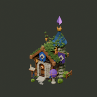
Mesh nodes 7,418 → 40 · scene triangle instances 248,974 → 160,886
Actual exports · bounded asset-side optimization
Editable detailed Blender sources are byte-identical. Stationary compatible surfaces are consolidated by material and animation owner; small animated targets and placement roots survive. Existing painted textures and every localized loop remain.
Actual CPU GLBs rendered at 480px with one unchanged neutral camera/light setup per pair; canonical 192/96px derivatives shown at native canvas sizes. These are gameplay-like diagnostic tiers, not measured game occupied pixels, artist approval or rendered game performance. Retain vivid roof/magic colors, planted overgrowth and each role signature.

Mesh nodes 7,418 → 40 · scene triangle instances 248,974 → 160,886
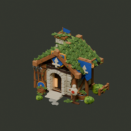
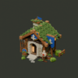
Mesh nodes 5,417 → 35 · scene triangle instances 184,615 → 121,567
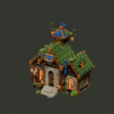
Mesh nodes 7,047 → 52 · scene triangle instances 281,055 → 189,303
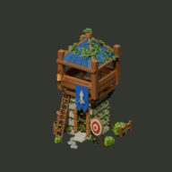
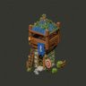
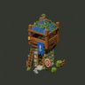
Mesh nodes 3,618 → 32 · scene triangle instances 124,101 → 81,285
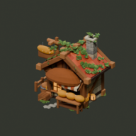
Mesh nodes 934 → 26 · scene triangle instances 46,003 → 38,627
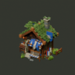
Mesh nodes 2,674 → 47 · scene triangle instances 106,650 → 78,658
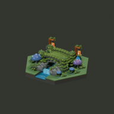
Mesh nodes 5,956 → 78 · scene triangle instances 175,350 → 117,470
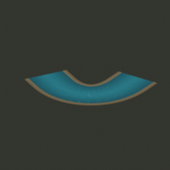
Mesh nodes 2 → 2 · scene triangle instances 416 → 416
Scene-reachable counts, not Blender object prose or guessed draw calls. Triangle instances include all serialized zero-area faces; unique definition totals are separate in the JSON. Instantiation is the median of 11 warm headless Godot trials after one warmup; import, resource loading, add_child, physics and rendering are excluded. First process resource-load and editor import timing are recorded separately; OS cache was not flushed.
| Selection | All nodes | Mesh nodes | Materials | Surfaces | Triangles | GLB MB | Instantiate ms |
|---|---|---|---|---|---|---|---|
| buildings/archery_range | 5,089 → 48 | 4,957 → 45 | 46 → 42 | 7,924 → 45 | 179,072 → 122,408 | 7.98 → 14.88 | 9.166 → 0.058 |
| buildings/arrow_tower | 3,715 → 36 | 3,618 → 32 | 44 → 30 | 5,855 → 32 | 124,101 → 81,285 | 3.54 → 8.36 | 6.348 → 0.042 |
| buildings/bakery | 937 → 29 | 934 → 26 | 22 → 22 | 1,332 → 26 | 46,003 → 38,627 | 3.47 → 4.24 | 1.468 → 0.034 |
| buildings/barracks | 5,552 → 38 | 5,417 → 35 | 45 → 34 | 8,812 → 35 | 184,615 → 121,567 | 4.44 → 12.22 | 9.979 → 0.044 |
| buildings/bombarding_tower | 4,717 → 34 | 4,596 → 30 | 37 → 26 | 7,505 → 30 | 153,801 → 97,737 | 3.71 → 10.06 | 8.527 → 0.040 |
| buildings/gold_mine | 598 → 25 | 595 → 22 | 19 → 19 | 958 → 22 | 25,162 → 19,034 | 1.80 → 2.31 | 0.943 → 0.029 |
| buildings/magic_academy | 7,610 → 43 | 7,418 → 40 | 42 → 36 | 12,100 → 40 | 248,974 → 160,886 | 5.40 → 16.19 | 14.051 → 0.050 |
| buildings/metal_mine | 2,610 → 47 | 2,557 → 43 | 43 → 42 | 4,032 → 43 | 103,446 → 70,702 | 7.10 → 10.07 | 4.331 → 0.055 |
| buildings/research_tower | 2,835 → 44 | 2,773 → 41 | 44 → 40 | 4,343 → 41 | 115,034 → 80,730 | 7.52 → 10.85 | 4.848 → 0.052 |
| buildings/stone_cutter | 2,919 → 33 | 2,850 → 30 | 34 → 29 | 4,593 → 30 | 100,781 → 70,917 | 3.35 → 7.34 | 5.140 → 0.039 |
| buildings/tavern | 2,803 → 43 | 2,739 → 39 | 43 → 32 | 4,344 → 39 | 102,992 → 76,832 | 3.87 → 7.81 | 4.685 → 0.049 |
| buildings/town_hall | 7,215 → 56 | 7,047 → 52 | 40 → 39 | 11,100 → 52 | 281,055 → 189,303 | 12.04 → 20.81 | 13.946 → 0.065 |
| buildings/trade_market | 2,662 → 39 | 2,600 → 35 | 39 → 30 | 4,125 → 35 | 97,126 → 71,222 | 3.47 → 7.31 | 4.520 → 0.045 |
| buildings/tree_house | 487 → 24 | 484 → 21 | 20 → 20 | 746 → 21 | 22,573 → 18,077 | 1.96 → 2.37 | 0.757 → 0.028 |
| buildings/weaver | 2,731 → 51 | 2,674 → 47 | 44 → 42 | 4,167 → 47 | 106,650 → 78,658 | 7.35 → 10.72 | 4.420 → 0.059 |
| buildings/woodcutter_hut | 985 → 33 | 982 → 30 | 25 → 25 | 1,420 → 30 | 44,821 → 37,221 | 3.54 → 4.33 | 1.510 → 0.038 |
| environment/components/forest_hex_stream | 12 → 12 | 12 → 12 | 5 → 5 | 12 → 12 | 216 → 216 | 0.60 → 0.60 | 0.015 → 0.015 |
| environment/components/forest_foam | 8 → 8 | 8 → 8 | 2 → 2 | 8 → 8 | 704 → 704 | 1.52 → 1.52 | 0.010 → 0.011 |
| environment/components/forest_waterfall | 8 → 8 | 8 → 8 | 3 → 3 | 8 → 8 | 168 → 168 | 1.48 → 1.48 | 0.010 → 0.010 |
| environment/hex_woodland_bridge | 2,592 → 127 | 2,496 → 85 | 60 → 53 | 3,838 → 85 | 70,238 → 56,438 | 9.96 → 13.56 | 3.838 → 0.118 |
| environment/hex_lantern_bridge | 6,143 → 120 | 5,956 → 78 | 52 → 46 | 9,622 → 78 | 175,350 → 117,470 | 11.05 → 19.85 | 10.980 → 0.111 |
| environment/hex_river_overlay_straight | 3 → 3 | 2 → 2 | 2 → 2 | 2 → 2 | 392 → 392 | 0.19 → 0.19 | 0.006 → 0.006 |
| environment/hex_river_overlay_turn_60 | 3 → 3 | 2 → 2 | 2 → 2 | 2 → 2 | 416 → 416 | 0.20 → 0.20 | 0.006 → 0.006 |
| environment/hex_river_overlay_turn_120 | 3 → 3 | 2 → 2 | 2 → 2 | 2 → 2 | 416 → 416 | 0.20 → 0.20 | 0.006 → 0.006 |
| environment/hex_river_overlay_end | 3 → 3 | 2 → 2 | 2 → 2 | 2 → 2 | 477 → 477 | 0.19 → 0.19 | 0.006 → 0.006 |
Every serialized transformed triangle and attribute is checked one-to-one, including exact zero-area faces, against the unbatched runtime profile. Source-to-GLB position/UV/normal checks use actual float accessors on every corner and explicitly model the pinned exporter’s local four-decimal normal conversion before inverse-transpose. Normal comparisons are fixed at 0.00002, not widened to fit the earlier failure. Encoded PNG bytes, independently decoded samples/alpha, material texture bindings and all clip targets/samples are strict. Blender reimport normal perturbation is independently counterfactually documented, not mistaken for a changed GLB normal.
All 25 source/export loops are evaluated at five poses; root/static structure remains fixed and endpoints close. Isolated Godot imports also resolve all tracks and exercise the loops. Headless timings do not qualify GPU cost, rendered FPS or actual game-camera acceptance. Use game-side batching only if later real renderer measurements demonstrate a remaining need.
Procedure, tactic assessment and downstream handoff · Full costs and render hashes · Fidelity / loops · Headless measurements · Independent fidelity counterfactuals